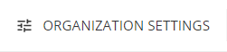
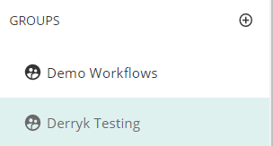
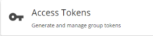

Logged into OnTask, There will be a configure button at the top right that looks like this :
Now, on the left you'll see your groups Click the one you want to use with us. (You can add more later)
Almost There! Now you should see the following section to click "Access Tokens".
